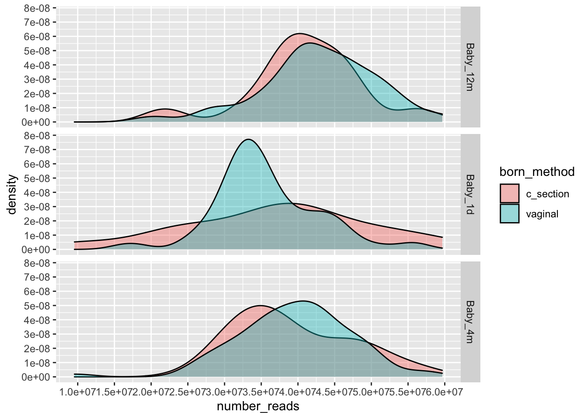

Last updated: 2020-04-24
Checks: 6 1
Knit directory: microbe/
This reproducible R Markdown analysis was created with workflowr (version 1.5.0). The Checks tab describes the reproducibility checks that were applied when the results were created. The Past versions tab lists the development history.
The R Markdown is untracked by Git. To know which version of the R Markdown file created these results, you’ll want to first commit it to the Git repo. If you’re still working on the analysis, you can ignore this warning. When you’re finished, you can run wflow_publish to commit the R Markdown file and build the HTML.
Great job! The global environment was empty. Objects defined in the global environment can affect the analysis in your R Markdown file in unknown ways. For reproduciblity it’s best to always run the code in an empty environment.
The command set.seed(20200423) was run prior to running the code in the R Markdown file. Setting a seed ensures that any results that rely on randomness, e.g. subsampling or permutations, are reproducible.
Great job! Recording the operating system, R version, and package versions is critical for reproducibility.
Nice! There were no cached chunks for this analysis, so you can be confident that you successfully produced the results during this run.
Great job! Using relative paths to the files within your workflowr project makes it easier to run your code on other machines.
Great! You are using Git for version control. Tracking code development and connecting the code version to the results is critical for reproducibility. The version displayed above was the version of the Git repository at the time these results were generated.
Note that you need to be careful to ensure that all relevant files for the analysis have been committed to Git prior to generating the results (you can use wflow_publish or wflow_git_commit). workflowr only checks the R Markdown file, but you know if there are other scripts or data files that it depends on. Below is the status of the Git repository when the results were generated:
Ignored files:
Ignored: .Rhistory
Ignored: .Rproj.user/
Untracked files:
Untracked: .gitignore
Untracked: miRNA/
Untracked: microbe/analysis/1-Preparation.Rmd
Untracked: microbe/analysis/2-Analysis.Rmd
Untracked: microbe/analysis/3-Visualization.Rmd
Untracked: treeclimbR_article.Rproj
Unstaged changes:
Deleted: microbe/analysis/Analysis.Rmd
Deleted: microbe/analysis/Preparation.Rmd
Deleted: microbe/analysis/Visualization.Rmd
Modified: microbe/analysis/_site.yml
Modified: microbe/analysis/index.Rmd
Note that any generated files, e.g. HTML, png, CSS, etc., are not included in this status report because it is ok for generated content to have uncommitted changes.
There are no past versions. Publish this analysis with wflow_publish() to start tracking its development.
suppressPackageStartupMessages({
library(curatedMetagenomicData)
library(phyloseq)
library(dplyr)
library(ggplot2)
library(ape)
})stool_0 <- BackhedF_2015.metaphlan_bugs_list.stool()snapshotDate(): 2019-10-22see ?curatedMetagenomicData and browseVignettes('curatedMetagenomicData') for documentationloading from cachestool <- ExpressionSet2phyloseq(stool_0, phylogenetictree = TRUE)Warning: `data_frame()` is deprecated as of tibble 1.1.0.
Please use `tibble()` instead.
This warning is displayed once every 8 hours.
Call `lifecycle::last_warnings()` to see where this warning was generated.Only samples from babies are used.
# sample variables: group (Infant (B1D, B4M, B12M, M)),
# born_method(vaginal, c_section)
samp <- data.frame(sample_data(stool), check.names = FALSE)
samp_data <- samp %>%
mutate(sample_id = rownames(samp),
group_id = gsub("..*_", "", sample_id),
group_id = ifelse(group_id == "B", "Baby_1d",
ifelse(group_id == "M", "Mother",
paste0("Baby_", tolower(group_id))
)),
period = ifelse(grepl("_1d", group_id), "0 M",
ifelse(grepl("_4m", group_id), "4 M",
ifelse(grepl("_12m", group_id),
"12 M", "Mother")))) %>%
filter(family_role != "mother") %>%
select(group_id, born_method, feeding_practice, born_method,
period, number_reads, sample_id)
head(samp_data) group_id born_method feeding_practice period number_reads sample_id
1 Baby_1d vaginal mixed_feeding 0 M 33292394 SID10_B
2 Baby_4m vaginal exclusively_breastfeeding 4 M 42937478 SID10_4M
3 Baby_12m vaginal no_breastfeeding 12 M 43463570 SID10_12M
4 Baby_1d vaginal exclusively_breastfeeding 0 M 36337796 SID45_B
5 Baby_4m vaginal exclusively_breastfeeding 4 M 43735250 SID45_4M
6 Baby_12m vaginal any_breastfeeding 12 M 34750848 SID45_12Mtable(samp_data$group_id, samp_data$born_method)
c_section vaginal
Baby_12m 15 79
Baby_1d 15 80
Baby_4m 15 81The count table
# raw counts
otu_count <- as.matrix(data.frame(otu_table(stool)))[, samp_data$sample_id]
reads <- samp_data$number_reads
new_count <- round((otu_count/100) %*% diag(reads), digits = 0)
colnames(new_count) <- colnames(otu_count)Taxonomic table and phylogenetic tree are updated after the removement of some OTUs.
# taxonomic table
new_tax <- data.frame(tax_table(stool)@.Data, check.names = FALSE)
# phylogenetic tree
new_phy <- phy_tree(stool)Sequencing depths are quite different among samples but quite similar between groups.
ggplot(data = samp_data) +
geom_density(aes(x = number_reads, y = ..density..,
fill = born_method, group = born_method),
alpha = 0.4) +
facet_grid(rows = vars(group_id)) +
scale_x_continuous(breaks = scales::pretty_breaks(n = 10)) +
scale_y_continuous(breaks = scales::pretty_breaks(n = 10))
Average samples are prepared for later visualization (e.g., heatmap) to avoid display so many samples in a figure. Samples, with the same born method and the same time point, are randomly assigned into 5 categories, and an average sample is generated for each category by taking the average counts of OTUs.
save(new_count, otu_count, samp_data, new_phy, new_tax,
file = "output/Preparation.RData")
sessionInfo()R version 3.6.1 (2019-07-05)
Platform: x86_64-apple-darwin15.6.0 (64-bit)
Running under: macOS Mojave 10.14.4
Matrix products: default
BLAS: /Library/Frameworks/R.framework/Versions/3.6/Resources/lib/libRblas.0.dylib
LAPACK: /Library/Frameworks/R.framework/Versions/3.6/Resources/lib/libRlapack.dylib
locale:
[1] en_US.UTF-8/en_US.UTF-8/en_US.UTF-8/C/en_US.UTF-8/en_US.UTF-8
attached base packages:
[1] parallel stats graphics grDevices utils datasets methods
[8] base
other attached packages:
[1] ape_5.3 ggplot2_3.3.0
[3] phyloseq_1.30.0 curatedMetagenomicData_1.16.0
[5] ExperimentHub_1.12.0 dplyr_0.8.5
[7] Biobase_2.46.0 AnnotationHub_2.18.0
[9] BiocFileCache_1.10.2 dbplyr_1.4.2
[11] BiocGenerics_0.32.0 workflowr_1.5.0
loaded via a namespace (and not attached):
[1] nlme_3.1-142 fs_1.3.1
[3] bit64_0.9-7 httr_1.4.1
[5] rprojroot_1.3-2 tools_3.6.1
[7] backports_1.1.6 R6_2.4.1
[9] vegan_2.5-6 mgcv_1.8-28
[11] DBI_1.0.0 colorspace_1.4-1
[13] permute_0.9-5 ade4_1.7-13
[15] withr_2.1.2 tidyselect_1.0.0
[17] bit_1.1-14 curl_4.2
[19] compiler_3.6.1 git2r_0.26.1
[21] cli_2.0.2 scales_1.1.0
[23] rappdirs_0.3.1 stringr_1.4.0
[25] digest_0.6.25 rmarkdown_1.17
[27] XVector_0.26.0 pkgconfig_2.0.3
[29] htmltools_0.4.0 fastmap_1.0.1
[31] rlang_0.4.5 RSQLite_2.1.2
[33] shiny_1.4.0 farver_2.0.3
[35] jsonlite_1.6.1 magrittr_1.5
[37] biomformat_1.14.0 Matrix_1.2-17
[39] Rcpp_1.0.4 munsell_0.5.0
[41] S4Vectors_0.24.0 Rhdf5lib_1.8.0
[43] fansi_0.4.1 lifecycle_0.2.0
[45] stringi_1.4.6 yaml_2.2.0
[47] MASS_7.3-51.4 zlibbioc_1.32.0
[49] rhdf5_2.30.0 plyr_1.8.5
[51] grid_3.6.1 blob_1.2.0
[53] promises_1.1.0 crayon_1.3.4
[55] lattice_0.20-38 Biostrings_2.54.0
[57] splines_3.6.1 multtest_2.42.0
[59] knitr_1.26 pillar_1.4.3
[61] igraph_1.2.4.1 reshape2_1.4.3
[63] codetools_0.2-16 stats4_3.6.1
[65] glue_1.4.0 BiocVersion_3.10.1
[67] evaluate_0.14 data.table_1.12.6
[69] BiocManager_1.30.10 vctrs_0.2.4
[71] httpuv_1.5.2 foreach_1.4.7
[73] gtable_0.3.0 purrr_0.3.3
[75] tidyr_1.0.2 assertthat_0.2.1
[77] xfun_0.11 mime_0.7
[79] xtable_1.8-4 later_1.0.0
[81] survival_2.44-1.1 tibble_3.0.0
[83] iterators_1.0.12 AnnotationDbi_1.48.0
[85] memoise_1.1.0 IRanges_2.20.0
[87] cluster_2.1.0 ellipsis_0.3.0
[89] interactiveDisplayBase_1.24.0